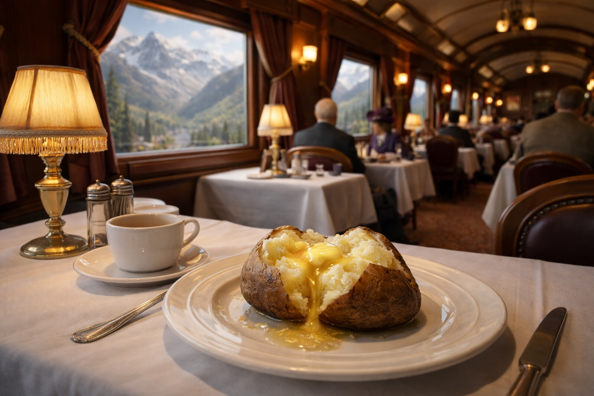

The Great Big Baked Potato: How Northern Pacific's North Coast Limited Made Culinary History

In 1908, a Northern Pacific dining car superintendent named Hazen J. Titus had a problem most railroad men would envy: potatoes too big. Farmers in Washington's Yakima Valley were growing Netted Gem russets so enormous that nobody would buy them. Grocers refused to stock them. Buyers took one look at those leathery, five-pound monsters and assumed they'd taste like sawdust. So the farmers did what any sensible person would do with produce the market rejected: they fed them to the hogs. Titus, who knew a good opportunity when he overheard one on a train, had a different idea entirely. What happened next turned a rejected vegetable into a marketing sensation, spawned a 40-foot electric potato with winking eyes on a Seattle rooftop, and made "Great Big Baked Potato" the most unlikely slogan in railroad history.
The Eavesdropper on the North Coast Limited
Titus was only a couple of months into his new role running the Northern Pacific's dining car operations when he set out on a familiarization trip aboard the railroad's flagship passenger train, the North Coast Limited. Somewhere along the line, he overheard two Yakima Valley farmers grumbling about their potato crop. The tubers they were growing weighed between two and five pounds each, and at a time when Americans preferred their potatoes dainty and small, there was simply no market for spuds the size of a man's shoe. Without buyers, the farmers had resigned themselves to selling the whole lot as hog feed for pennies.
Titus jumped into the conversation. By the time the farmers got off the train in Yakima, he had talked his way into a bushel of their unsellable potatoes and hauled them west to the Northern Pacific's commissary kitchen in Seattle. There, he and his cooks set to work figuring out how to tame a potato big enough to anchor a dinner plate on its own.
The spur of the moment purchase of an undesirable crop launched one of the most successful and unlikely advertising campaigns in American railroad history.
Cracking the Code on the Giant Spud
The problem was straightforward: a potato that big, baked the normal way, would burn black on the outside while the center stayed raw. Nobody wants that. Titus and his kitchen team experimented until they landed on a solution. They designed a special baking rack fitted with a metal spike, like a kebab skewer, that pierced through the center of each potato and conducted heat inward. The ideal weight turned out to be right around two pounds, and the ideal baking time was a slow, patient two hours. When they finally pulled the finished product out of the oven, rolled it gently to loosen the skin, split it lengthwise, and dropped a generous pat of butter on top, the result was a revelation. The flesh was tender, creamy, and absolutely delicious.
On February 9, 1909, the first Great Big Baked Potato was served aboard the North Coast Limited. It cost ten cents, which is about $3.25 today. Passengers ate it with a silver spoon stamped with the Northern Pacific logo. And they loved it.
The P.T. Barnum of Tubers
What Titus did next is what separates a good menu item from a cultural phenomenon. He didn't just serve potatoes. He built an empire around them.
Understanding that early 1900s railroads couldn't really compete on speed or comfort (every line between Chicago and Minneapolis, for example, made the trip in the same 400 minutes, using cars built by the same manufacturers), Titus leaned hard into food as the thing that would set Northern Pacific apart. And his chosen weapon was a potato.
The railroad rebranded itself as "The Route of the Great Big Baked Potato" and kept that slogan for nearly fifty years. Titus created a tidal wave of promotional merchandise: silver-plated spoons, letter openers, inkwells, ink blotters, lucky medallions, mechanical pencils, pennants, statuettes, aprons, and an avalanche of postcards. Every one of them featured the same iconic image of a giant split potato on a plate, a spoon on the right and a slab of butter on the left, served on Northern Pacific's signature Garnet-pattern china. He even founded a "Great Big Baked Potato Booster Club," complete with membership coins.
Then he went bigger. Literally. When the Northern Pacific built an addition to its Seattle commissary in 1914, Titus topped it with a three-dimensional potato replica that measured 40 feet long and 18 feet in diameter. According to a report in the Railway Age Gazette, the potato was rigged with electric lights so that its eyes blinked on and off, and the huge cube of butter on top glowed intermittently. Picture that: a winking, glowing potato the size of a city bus, perched on a rooftop in downtown Seattle. In 1912, a Great Big Baked Potato float steamed its way down First Avenue during Seattle's Potlatch Days parade.
The Northern Pacific mounted a 40-foot electric potato on its Seattle commissary. Its eyes winked. Its butter glowed. Nobody had ever seen anything like it.
The railroad even commissioned a song. Written by N.R. Streeter, H. Caldwell, and Oliver George, "Great Big Baked Potato" was published as sheet music in 1913 and featured ten photos of Northern Pacific dining car specialties on the back cover. Hollywood got involved too. Stage and screen star Lillian Russell appeared in a 1915 promotional postcard posing with the famous potato. And Dr. Harvey Wiley, former head of the U.S. Food and Drug Administration and then at the Good Housekeeping Institute, praised Northern Pacific's food program as a model for every railroad and hotel in America.
Starting a Food Fight on the Rails
The Great Big Baked Potato worked so well that it started a dining car arms race. The Great Northern Railway, Northern Pacific's fiercest competitor, countered with the Baked Wenatchee Apple, a dessert built around Rome Beauty apples from the Wenatchee Valley that were two and a half times larger than a standard McIntosh. The apples were partially peeled, cored, stuffed with sugar, and baked until they became something close to a candied apple. Great Northern served them at breakfast, lunch, and dinner.
But the potatoes always won. A Northern Pacific brochure from the late 1930s reported that each year the railroad consumed 14 tons of coffee, 27 tons of butter, 50 tons of poultry, and a staggering 265 tons of potatoes. By 1916, the potatoes had spread beyond the trains entirely. The Fort Dearborn Hotel in Chicago served them in its dining room, each dish identified by a Northern Pacific label confirming the spuds were from the same stock served on the North Coast Limited.
A Legacy Served with Butter
The Northern Pacific eventually merged into Burlington Northern in 1970, and the Great Big Baked Potato faded from the American dining landscape along with the linen tablecloths, silver cutlery, and white-jacketed waiters that once defined train travel. The 40-foot potato came down from the commissary roof. The Booster Club coins turned into collector's items on eBay.
But Hazen Titus left a mark that's hard to ignore. He took a vegetable that farmers were literally feeding to pigs, figured out how to cook it properly, and turned it into one of the most successful food marketing campaigns of the twentieth century. He proved that in the golden age of railroading, when the trains all looked the same and ran at the same speed, the thing that made people choose your railroad might just be what you put on their plate.
Today, you can visit the Northern Pacific Railway Museum in Toppenish, Washington, where the story of the NP's dining car legacy lives on. And the next time you split open a baked potato and watch the steam curl up off that white flesh, you might think about the man who heard two farmers complaining on a train and saw something nobody else could see: an empire, hiding inside a potato.
Sources & Further Reading:
- Taters and Trains: The Great Big Baked Potato and the Northern Pacific Line - Rails to Trails Conservancy
- Five Mind-Blowing Dining Car Facts - Trains Magazine
- Potato On Parade - The Seattle Times (Paul Dorpat)
- The Great Big Baked Potato Song - Tales of Tacoma / Tacoma Historical Society
- The Great Big Baked Potato - Streamliner Memories
- Hazen Titus Makes a Silk Purse from a Sow's Feed - Key, Lock & Lantern Magazine
- Northern Pacific Railway - Wikipedia
- Northern Pacific Railway Museum - Toppenish, Washington
Written by Kevin Sotka for meatbagmade.com. Got a favorite railroad dining car story? Drop me a line at meatbagmade@gmail.com or find me on X/Twitter at @TrainDewd. Subscribe to the newsletter on Substack for more Pacific Northwest railroad history.